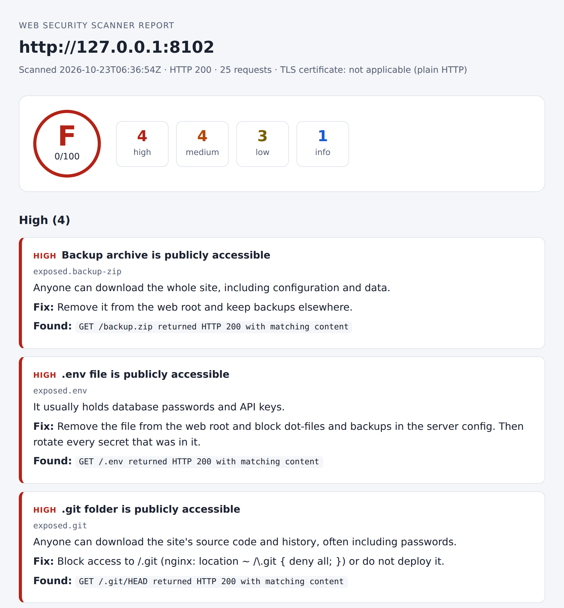

PYTHON · CYBERSECURITY PROJECT
A command-line tool that checks a small business website for common security problems, gives it a score from 0 to 100, and explains how to fix each issue.
5
areas checked
145
automated tests
0
runtime dependencies
3
practice sites
Every scan ends with a grade, a count of problems by severity, and one card per finding. Each card says why it matters and what to change.

The report for a practice site with deliberate mistakes.
Five areas, each with its own tests.
HSTS, Content-Security-Policy, clickjacking protection, nosniff, Referrer-Policy and software versions leaked in headers.
Secure, HttpOnly and SameSite flags on every cookie. Session-like cookies are rated more strictly.
Expired, self-signed or mismatched certificates, certificates about to expire, obsolete TLS 1.0 and 1.1, and a missing redirect from HTTP to HTTPS.
Public .git folders, .env files, backups, SQL dumps, phpinfo pages and directory listings, confirmed by their content and not only by a 200 response.
Outdated core, public user list, xmlrpc.php, leaked wp-config backups, debug logs and visible plugins. Runs only on WordPress sites.
A security tool should not become a risk itself, so the guard runs before any request is sent.
It scans localhost by default. Any other site must be named explicitly with --allow-host.
Cloud metadata addresses are always refused, even if allowed, and redirects to other hosts are never followed.
About 30 to 50 requests per scan, with a pause between them and a hard cap of 80.
Nothing a site controls reaches the HTML report unescaped, and the report carries its own strict Content-Security-Policy.
The rules are simple on purpose, so anyone can see why a site got a C.
Start at 100, then subtract:
Each type of problem counts once, however many places it appears. Any high finding caps the grade at D.
Grades:
| Grade | Score |
|---|---|
| A | 90 and up |
| B | 80 to 89 |
| C | 70 to 79 |
| D | 60 to 69 |
| F | below 60 |
Three fake sites with deliberate mistakes ship with the project. The tests check that each one produces exactly its documented findings.
| Site | What it shows | Findings | Score |
|---|---|---|---|
| bare | No security headers, version leaks, cookies without flags | 5 medium, 7 low, 1 info | 53, grade F |
| leaky | Exposed .git, .env, SQL dump, backup zip, phpinfo and a directory listing | 4 high, 4 medium, 3 low, 1 info | 0, grade F |
| wordpress | Old WordPress with public users, xmlrpc and a leaked wp-config backup | 1 high, 6 medium, 9 low, 3 info | 5, grade F |
All three sites listen on 127.0.0.1 only, and every password in them is fake.